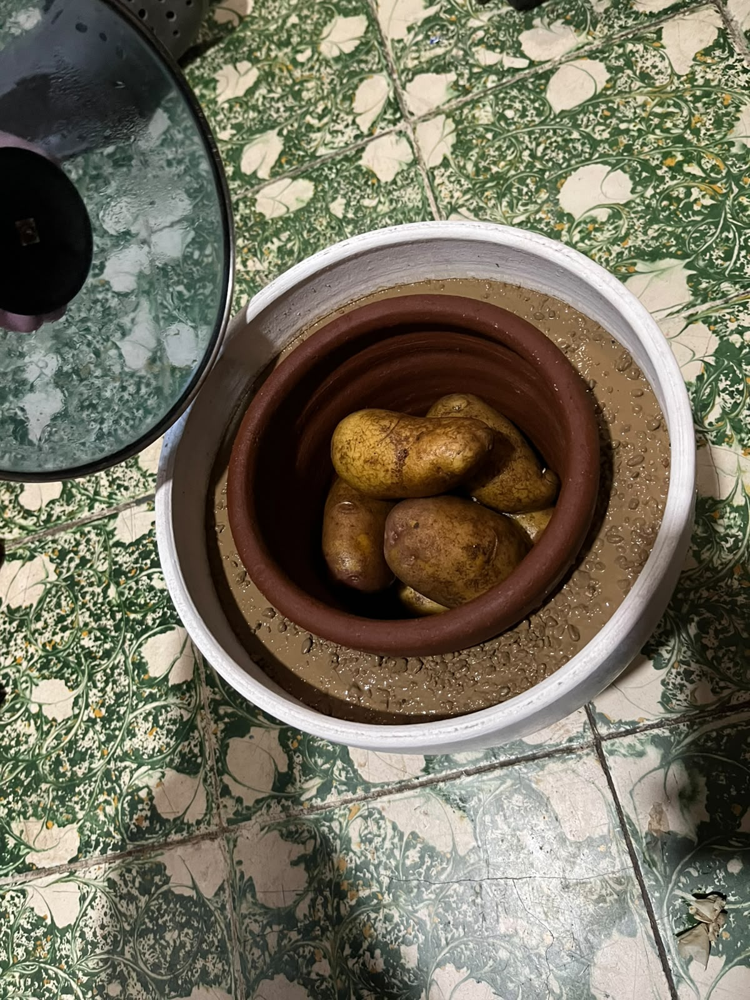
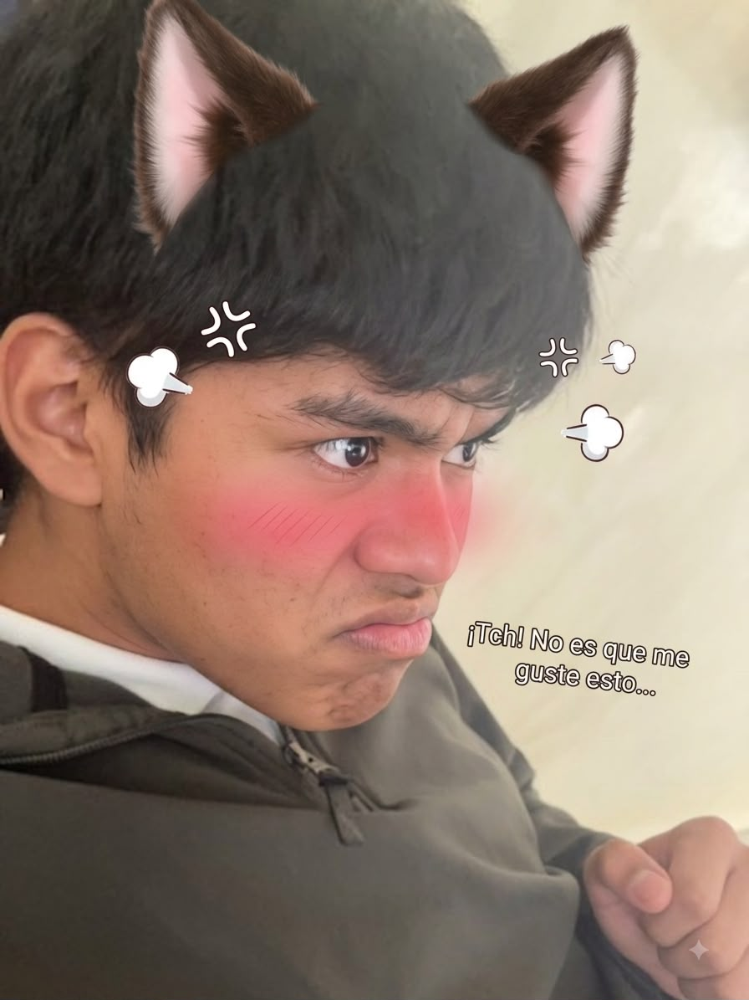

Proyecto de Cero Electricidad | Semana de la Juventud

Un refrigerador zeer es un dispositivo de enfriamiento ecológico y económico que funciona sin electricidad, utilizando el principio físico de la evaporación del agua. Consiste en colocar una maceta de barro pequeña dentro de otra más grande, rellenar el espacio entre ambas con arena húmeda y cubrir la parte superior con un paño húmedo.
Consiste en dos vasijas de barro de diferente tamaño, una dentro de la otra.
El espacio entre ambas vasijas se llena con arena húmeda.
Al evaporarse el agua de la arena a través del barro poroso, absorbe el calor del recipiente interno, reduciendo la temperatura interior.

Hugo Aldair Nuñez Moreno
Francisco Javier Rivera Martinez
Hector Gerardo Aguilera Magaña
Alexis Arturo Arana Grijalva
Diego Alejandro Alfaro Aguilar